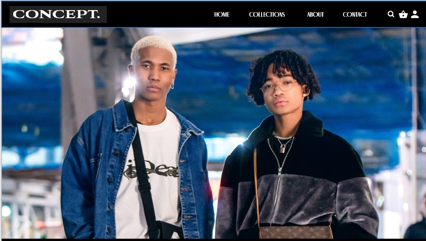
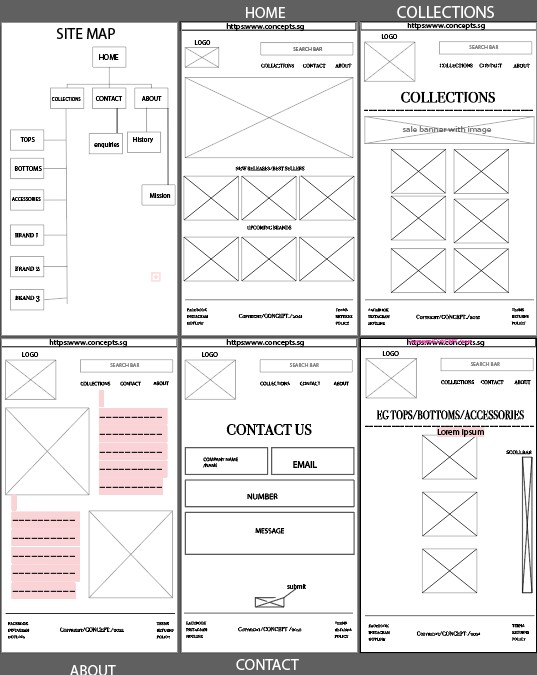
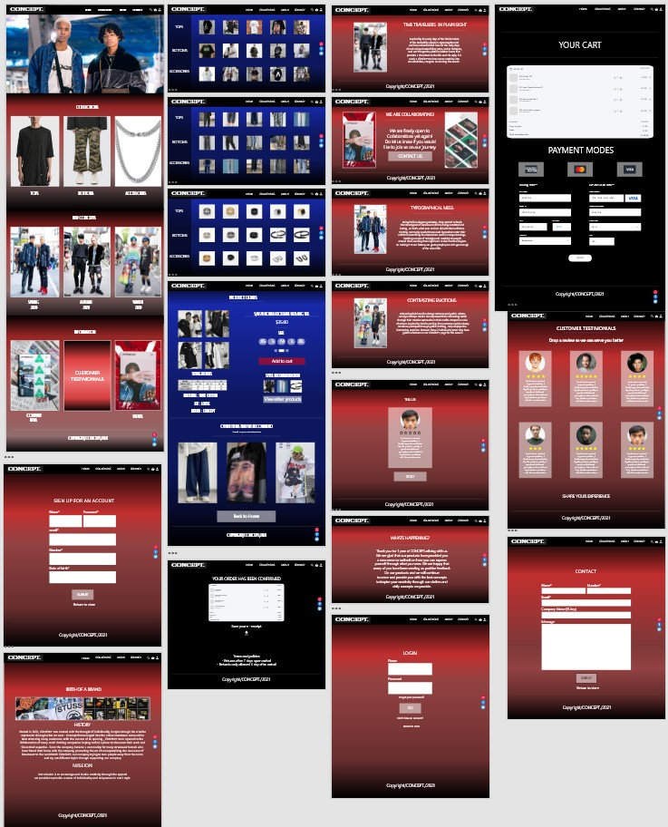

IDEATION

PREFACE
i made CONCEPT as a website for people to express themselves through fashion providing information on how to dress and clothes from small brands. i have always wanted to be a fashion desginer but right now i am designing websites for them which is funny but i think i enjoy developing way more now as it is my passion
WHY DID I MAKE THIS
I did this because i noticed that numerous shopping websites either have the same layout and navigation which mad ethem similar and mundane.i started with my lofi wireframes to scout for ideas that diffrentiate my website to conventional cooperate brands like uniqlo etc, and add my own twist and ideas to my thought process to make it unique and special.I took inspirations from Art gallery magazines and how they displayed their featured arts and the inspiration.
DESIGN

I then decided to start on making a lofi wireframe as well as a hifi wireframe
using adobe XD to visualise my ideas on a rough layout and placement of
various UI elements around the page
using adobe XD to visualise my ideas on a rough layout and placement of
various UI elements around the page
This is an image of my LOFI wireframe
This is an image of my HIFI wireframe
A wireframe is an important part of designing ,without it i will be unable to visualise my ideas. i decided to go with a horizontal navigation at the top as well as a 3-grid 1fr layout for the home page. I used different elements and principles of design and implemented them into my design.
PROTOTYPING
This was the time to add the effects and connect the pages together using the prototyping function.
It was my first time implementing such a function using adobe XD.
Border hover effect and underline hover effects and to test out the application as whole.

with these basic effects it helps the user understand which part of the webpage it is interacting with which is one of the basic ways of indication , minimalistic and simple.
CONCLUSION